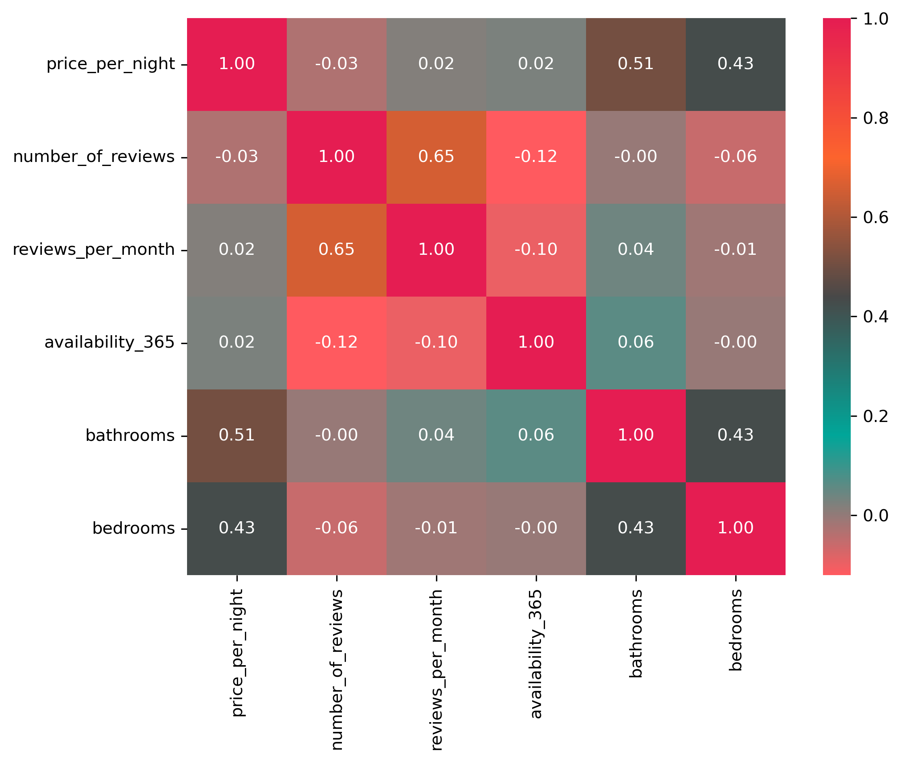

Explore detailed visualizations to understand the factors affecting Airbnb prices in Boston.
In this box plot, the nightly Airbnb prices are being compared across room type and neighborhood. The user can use the drop-down to select the neighborhood and using the legend on the right to identify the colors, the boxes can be explored for each room type. In this chart, it clearly shows how room type has a significant effect on the nightly prices, as an entire home is relatively more across all neighborhoods than just a private room. The use of showing the different neighborhoods exemplifies how this holds true across all of them, except for one outlier of Back Bay. In Back Bay, a private room is actually slightly more money in comparison to a home, which shows how neighborhoods can affect how the prices are for different types. Given that Back Bay is a more touristic area, this would make sense. Exploring all the neighborhoods would be helpful to get a feel for this pricing.
In this scatter plot, the number of listings per host is compared to their average price per night. Then, using an interval brush, one can explore the host response rate, also compared to the average price per night for that host. In the first chart, large multi-listing hosts mainly cluster in the lower price range (under $200 per night), suggesting that hosts tend to operate cheaper, more standardized units, while higher-priced listings (above $400) are owned by hosts with only one or a few properties. In the second chart, host response rates remain consistently high (between 90% and 100%) across all price levels, showing that both budget and luxury listings provide similarly fast communication. A few low-response outliers exist, but they appear randomly across different price points. Overall, the charts suggest that Airbnb pricing is not strongly influenced by responsiveness, meanwhile slightly affected by the number of listings per host.
In this chart above, it is showing a heatmap of different quantitative factors in relation to Airbnb characteristics. Therefore, looking at two variables one can explore how closely related they are to one another. In relation to specifically price, this shows that the number of bathrooms have the strongest effect on nightly prices with a correlation coefficient of 0.51. This shows that as the number of bathrooms increases, the price per night also increases at a moderate rate. The number of bedrooms is the same case, in which it is one of the stronger features. On the other hand, demand and activity metrics such as reviews and availability have less of a correlation/effect on the price. This is overall showing that the physical attributes of a place have more of an effect on price. Take a look at the heatmap to see what other variables strongly correlate with each other!

This interactive map shows Airbnb prices and density across Boston neighborhoods. Fill color (orange gradient) represents the average nightly price, while border thickness (pink) encodes the density of listings. Hovering over a neighborhood reveals both metrics in detail. Together, these encodings highlight areas that are both expensive and saturated with Airbnbs, offering insight into Boston’s short‑term rental market.
This scatter plot examines the relationship between nightly price and perceived value across Boston Airbnb listings.
Each point represents a listing, plotted by price per night on the x-axis and review score (1–5) on the y-axis.
Colors distinguish different room types, and a dropdown filter allows you to switch between room types to reduce overlap and highlight patterns more clearly.
How to read this chart:
• X-axis: Price per night in USD
• Y-axis: Guest review score for value (1–5)
• Color: Room type (Entire home/apartment, Private room, Shared room, etc.)
• Dropdown: Focus on one room type at a time